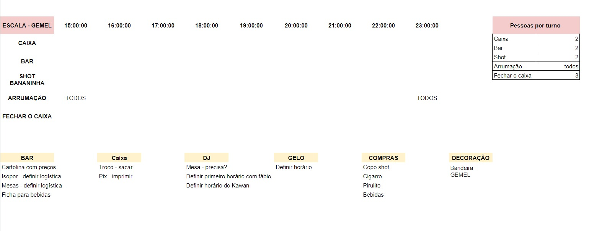
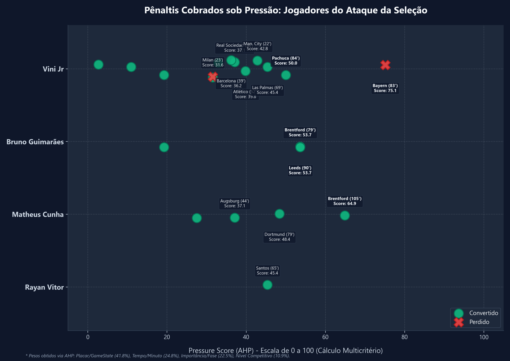

Veja como o post será exibido na rede social do Lucas Mesquita

Ancelotti olhou para a métrica errada? O perigo dos dados sem contexto no futebol ⚽📊
Ontem, a eliminação do Brasil contra a Noruega expôs um erro de tomada de decisão que serve como uma lição valiosa de liderança e ciência de dados.
A escolha de Bruno Guimarães para cobrar o pênalti decisivo nas Oitavas de Final parecia logicamente correta no papel. Afinal, Bruno vinha de estatísticas impecáveis: 100% de aproveitamento nos treinos da semana e 100% de conversão na sua carreira profissional em tempo regulamentar (3 de 3).
Mas, em Analytics, há uma regra de ouro: o dado puro, sem contexto, não diz absolutamente nada.
Ao auditar a base de dados histórica das cobranças dos titulares da Seleção e aplicar o método AHP (Analytic Hierarchy Process) para mensurar a pressão psicológica de cada cobrança, o cenário real pré-jogo era outro:
O Diagnóstico:
Ao ignorar o contexto de pressão (placar, tempo de jogo, nível competitivo e peso da camisa nacional), a comissão técnica tomou uma decisão baseada na "métrica da conveniência". Escolheu-se o jogador pelo aproveitamento no treino (pressão zero) e por uma taxa agregada confortável, ignorando o comportamento do atleta diante de cenários de estresse cognitivo elevado.
O resultado? Diante de uma pressão real calculada de 45.6 em Oitavas de Copa do Mundo, a atenção visual do batedor desabou (fenômeno de choking documentado pela psicologia do esporte), facilitando a defesa do goleiro.
No futebol ou no conselho de administração, escolher seus "batedores" com base em métricas de ambiente controlado é o caminho mais curto para falhar na hora decisiva.
Como a sua empresa avalia a performance dos seus colaboradores? Você olha para a taxa de sucesso ou para o contexto do estresse enfrentado?
